Ubuntu MATE für den Raspberry Pi
Achtung!
Die Verwendung dieses Howto geschieht auf eigene Gefahr. Bei Problemen mit der Anleitung melde dies bitte in der dazugehörigen Diskussion und wende dich zusätzlich an den Verfasser des Howtos.
Hinweis:
Diese Howto-Anleitung wurde zuletzt von ole_pinelle am 10.03.2017 unter Ubuntu MATE 16.04 erfolgreich getestet.
Zum Verständnis dieses Artikels sind folgende Seiten hilfreich:
Ubuntu MATE für den Raspberry Pi  ist eine Anpassung des Ubuntu MATE Desktop an die Prozessorarchitektur des Rasberry Pi. Als Grundlage dienen die armhf-Quellen von Ubuntu, die um eigene Programme erweitert werden. Unterstützt werden aktuell nur der Raspberry Pi 2 und 3.
ist eine Anpassung des Ubuntu MATE Desktop an die Prozessorarchitektur des Rasberry Pi. Als Grundlage dienen die armhf-Quellen von Ubuntu, die um eigene Programme erweitert werden. Unterstützt werden aktuell nur der Raspberry Pi 2 und 3.
Da es sich bei der ARM-Architektur des Raspberry Pi um eine andere Prozessorarchitektur als z.B. bei einem PC handelt, funktionieren auf diesem auch nur Programme, die speziell für ARM kompiliert wurden. Programme wie z.B. Google Chrome funktionieren daher nicht auf dem Raspberry Pi. Als Alternative gibt es aber den Browser Chromium.
| 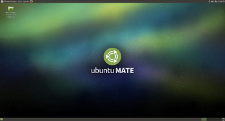 |
| Ubuntu MATE - Desktop |
SD-Karte vorbereiten¶
Bei dem Raspberry Pi wird das Betriebssystem von einer SD-Karte gestartet. Zur Vorbereitung der SD-Karte empfiehlt es sich, diese mit FAT32 zu formatieren und bootfähig zu machen. Danach muss das Image, welches auf der Seite von Ubuntu MATE for the Raspberry Pi 2 and Raspberry Pi 3 angeboten wird, heruntergeladen werden. Anschließend entpackt man die Datei, um sie auf die SD-Karte zu übertragen. Unter Linux kann dabei in der Konsole der Befehl "dd" genutzt werden.
sudo dd if=ubuntu-mate-16.04-desktop-armhf-raspberry-pi.img of=/dev/sdx bs=1M && sync
Der Parameter-Teil "of=dev/sdx" bezieht sich dabei auf die SD-Karte. Wenn z.B. "sdb" wie im Bildbeispiel die SD-Karte ist (kann man über den Befehl "lsblk" herausfinden), wird statt "sdx" dann "sdb" angegeben.
Falls ein aufspielen des Images mit "dd" nicht funktioniert, kann wie auf der Projektseite von Ubuntu Mate angegeben , "ddrescue" verwendet werden.
sudo ddrescue -D --force ubuntu-mate-16.04.2-desktop-armhf-raspberry-pi.img /dev/mmcblk0
| 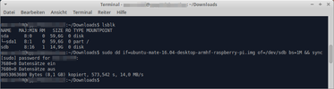 |
| SD-Karte beschreiben |
Alternativ kann die Installation des Images auch über die Laufwerksverwaltung ausgeführt werden. Dazu wird eine SD-Karte benötigt, die groß genug für das Quellimage ist. Für das Aufspielen des Images wird die SD-Karte ggf. gelöscht. Anschließend kann das Image über die zusätzlichen Partitionierungseinstellungen wiederhergestellt werden.
| 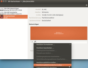 |
| Partitionsabbild aufspielen |
| 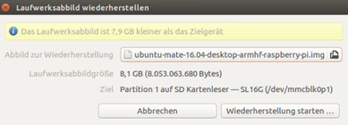 |
| Laufwerksabbild auswählen |
| 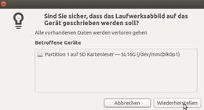 |
| SD Karte Beschreiben |
Installation¶
Beim ersten Start von Ubuntu MATE für den Raspberry Pi werden vier Punkte durchlaufen. Beim ersten Punkt kann die Systemsprache geändert werden. Beim zweiten Punkt kann die Zeitzone geändert werden, bevor man beim dritten Punkt das Tastaturlayout ändern kann. Abschließend wird beim vierten Punkt der Rechnername, der Benutzername und das Passwort angegeben. Danach läuft der Installationsprozess automatisch weiter.
| 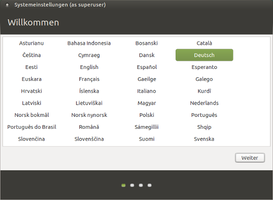 |
| Willkommen |
| 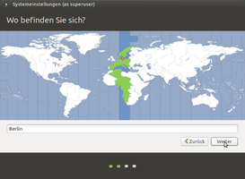 |
| Zeitzone |
| 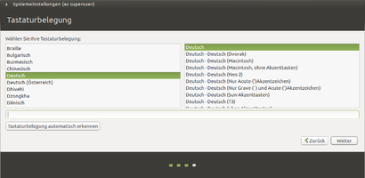 |
| Tastaturlayout |
| 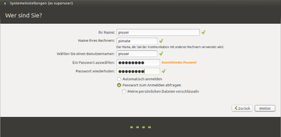 |
| Benutzerdaten |
Einrichtung¶
Nach einem Neustart und dem Anmelden mit den Benutzerdaten startet der Desktop und das Willkommenfenster. Über dieses können Informationen zum System abgerufen werden. Abschließend sollte noch bei Bedarf die Sprachunterstützung für die Sprache "Deutsch" nachinstalliert werden. Dies erfolgt über den Menüpunkt "System" des Ubuntu MATE - Desktops. Über den "Software Updater" bzw. die Software - Aktualisierungsverwaltung wird Ubuntu MATE für den Raspberry Pi auf den neuesten Stand gebracht.
Programme können neben der Möglichkeit über die Kommandozeile via apt über die grafischen Oberflächen "Software Boutique" oder nach einer zusätzlichen Paketinstallation durch Synaptic installiert werden.
| 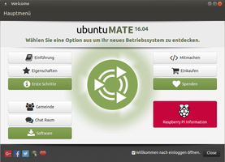 |
| Willkommen - Hauptmenü |
| 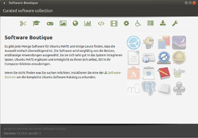 |
| Software Boutique |
| 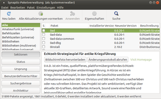 |
| Synaptic |
Speicherplatzanpassung¶
Seit dem Ubuntu MATE Release 16.04.02 für den Raspberry Pi wird die volle SD-Karten-Kapazität nach dem ersten Booten benutzt. Das Ändern der Größe unter dem Punkt "Raspberry PI Information" des Willkommenfensters muss nun nicht mehr zusätzlich durchgeführt werden.
| 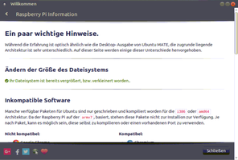 |
| SD-Karten-Kapazität nach dem Booten |
Konfigurationsmöglichkeiten¶
Kernelupdate¶
Der Kernel basiert auf den Quellen der Rasberry Pi Fondation und weicht somit vom normalen Ubuntu-Kernel ab. Daher kann dieser nur über das folgende Kommando separat auf den neuesten Stand gebracht werden.
sudo rpi-update
Bildschirmrand¶
Nach dem ersten Booten wird der Bildschirm bei LCD-Monitiren nicht vollständig ausgefüllt  , da in der config.txt Overscan auf den Wert Null gestellt ist. Diese Konfiguration ist eingestellt, damit bei Röhrenmonitoren die Oberfläche nicht unter den Blenden der überdeckten Bildränder verschwindet.
, da in der config.txt Overscan auf den Wert Null gestellt ist. Diese Konfiguration ist eingestellt, damit bei Röhrenmonitoren die Oberfläche nicht unter den Blenden der überdeckten Bildränder verschwindet.
Um den vollen Bildschirm zu nutzen editiert man Beispielsweise mit dem Editor nano die config.txt:
sudo nano /boot/config.txt
In der Datei sucht man den Eintrag disable_overscan und verändert ihn wie folgt:
#disable_overscan=1.
Über „strg+x, j, Eingabe“ speichert man die Änderungen und rebootet das System.
Textmodus¶
Wer die grafische Oberfläche nicht dauerhaft braucht, kann Ubuntu MATE für den Rasberry Pi auch so einstellen, dass beim Start des Betriebssystems nur eine Textoberfläche erscheint.
sudo graphical disable // deaktiviert den Start der grafischen Oberfläche sudo graphical enable // aktiviert den Start der grafischen Oberfläche
SSH Konfiguration¶
Um im Raspi die SSH Verbindung zu aktivieren, muss im Terminal der Befehl
raspi-config
eingegeben werden
Über das Konfigurationstool im Terminal, wird dann die Option „3 Interfacing Options“ gewählt. Der Eintrag P2 aktiviert die SSH verbindung, wenn im Dialog die Abfrage mit Yes bestätigt wird.
| 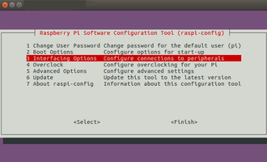 |
| Interfacing Options |
| 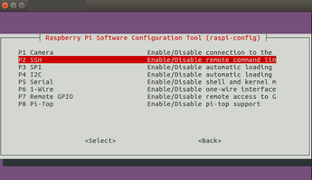 |
| Auswahl Remote Command Line |
| 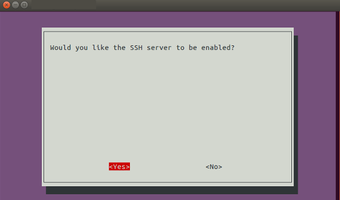 |
| SSH Aktivieren |
VNC Konfiguration¶
Wer sich mit VNC auf den Rasperry Pi verbinden möchte, kann x11vnc verwenden.
Als Vorlage für diesen Teil des Howto's dient eine Anleitung des Elektronik Kompendiums , die in ähnlicher Form aber auch im Artikel VNC und anderen Quellen zu finden ist.
sudo apt-get install x11vnc
Die Verbindung kann dann mit folgender Eingabe im Terminal getestet werden.
x11vnc -usepw -forever -display :0
Die Option -forever bewirkt, dass die Verbindung bei trennen der SSH Verbindung weiter läuft.
VNC Verbindung permanent einstellen¶
Damit der VNC Server nach einem Reboot sofort zur Verfügung steht, werden zwei Konfigurationen benötigt. Die erste Konfiguration beschreibt den Autostart von VNC nach dem User Login, die zweite Konfiguration stellt ein, wie man VNC einrichtet, um sich vor dem Login mit dem Raspberry Pi zu verbinden.
Autostart von VNC nach User Login¶
Zuerst wird der Autostart des VNC Servers nach dem User Login eingestellt.
nano /home/fiete/.config/autostart/x11vnc.desktop
In die Datei trägt man folgende Zeilen ein:
[Desktop Entry] Type=Application Name=X11VNC Exec=x11vnc -usepw -forever -display :0 StartupNotify=false
Anschließend startet man den Raspi neu und testet die VNC Verbindung nach dem User Login.
Autostart von VNC vor User Login¶
Um den Autostart von VNC einzustellen legt man zuerst das Verbindungspasswort in der Datei x11vnc.pass an.
sudo x11vnc -storepasswd /etc/x11vnc.pass
Danach wird in systemd der zugehörige Service angelegt.
sudo nano /lib/systemd/system/x11vnc.service
In dem folgende Konfigurationen festgelegt werden.
[Unit] Description=Start X11VNC After=multi-user.target [Service] Type=simple ExecStart=/usr/bin/x11vnc -display :0 -auth guess -forever -loop -noxdamage -repeat -rfbauth /etc/x11vnc.pass -rfbport 5900 -shared [Install] WantedBy=multi-user.target
Der Service wird dann aktiviert.
sudo systemctl enable x11vnc.service
Danach erfolgt ein Reboot. Anschließend kann die VNC Verbindung vor dem User Login aufgebaut werden.
Hardwarebeschleunigung für Videos¶
Für die meisten Videos ist mittlerweile die Hardwarebeschleunigung in Ubuntu MATE für die Videowiedergabe verfügbar. Für MPEG-2 und VC-1 Video Dateien müssen entsprechende Lizenzen erworben werden.
Lizenzen¶
Sofern man Lizenzen für den Raspberry Pi besitzt ergänzt man diese im im Bereich Licensed Codecs der config.txt, wie im folgenden Beispiel.
################################################################################ ## Licensed Codecs ## ## Hardware decoding of additional codecs can be enabled by purchasing a ## license that is locked to the CPU serial number of your Raspberry Pi. ## ## Up to 8 licenses per CODEC can be specified as a comma seperated list. ## ################################################################################ ## decode_MPG2 ## License key to allow hardware MPEG-2 decoding. ## decode_MPG2=0x12345678 ## decode_WVC1 ## License key to allow hardware VC-1 decoding. ## decode_WVC1=0x12345678
Um die zu prüfen, ob die Codecs angezogen werden gibt man im Terminal die folgenden beiden Befehle ein, um den Status zu überprüfen.
vcgencmd codec_enabled MPG2 vcgencmd codec_enabled WVC1
Wenn die Codecs korrekt geladen wird der Status als enabled angezeigt.
MPEG2=enabled WVC1=enabled
VLC¶
Unter VLC kann ebenfalls die Hardwarebeschleunigung für Videos eingestellt werden.
Dies ist unter den VLC Tools möglich.
Tools > Preferences > Video möglich
| 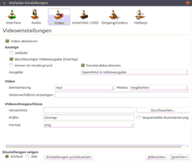 |
| VLC Hardwarebeschleunigung |
Dort muss die Option „OpenMax IL“ eingestellt werden.
OMX Player¶
Eine weitere nützliche Verwendung ist die Verwendung des OmxPlayer. Die Verwendung ist Terminal basiert, und wird wie folgt gestartet:
omxplayer -o hdmi video.mp4
So ist es beispielsweise möglich beliebige Videos oder Streams per SSH auf dem Rasperry Pi zu starten.
Ubuntu Pi Flavour Maker¶
Der Ubuntu Pi Flavour Maker stellt alternative Desktop-Umgebungen bereit. So können über die Projektseite Varianten für den Xfce-Desktop (Xubuntu), den LXDE-Desktop (Lubuntu) oder eine ganz ohne eine Desktop-Umgebung, die dann als Server fungieren kann, heruntergeladen werden.
Links¶
Ubuntu MATE für den Raspberry Pi
- ProjektseiteUbuntu MATE für den Raspberry Pi
- Bitbucket-ProjektseiteWikiseite zum MATE-Desktop - ubuntuusers.de
HOWTO: Classic, apt-based Ubuntu 16.04 LTS Server on the rpi2!
- Blogbeitrag, 06/2016http://www.gieseke-buch.de/raspberrypi/wenn-raspberry-nicht-gesamten-bildschirm-ausnutzt/
http://blog.helmutkarger.de/raspberry-media-center-teil-15-mpeg-2-lizenz-schluessel/
https://www.elektronik-kompendium.de/sites/raspberry-pi/2011121.htm
- Erstellt mit Inyoka
-
 2004 – 2017 ubuntuusers.de • Einige Rechte vorbehalten
2004 – 2017 ubuntuusers.de • Einige Rechte vorbehalten
Lizenz • Kontakt • Datenschutz • Impressum • Serverstatus -
Serverhousing gespendet von